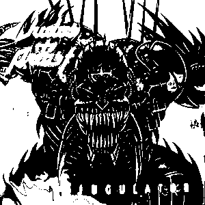

 For our first album we have 1997's Jugulator by Judas Priest. This album is quite often overlooked by the band itself, and Priest fans alike, as unlike most of the band's albums, this one doesn't have lead singer Rob Halford, but American Tim "Ripper" Owens. This was the first Priest album with Owens in, after be replaced Halford in 1996 when the band saw him sing covers of their own songs.
The album isn't really like most of Priest's work, don't play Stained Class (1978), and expect that it will be like that. This album has more of a slow metal feeling to it, rather than a traditional heavy metal feel that Judas Priest had with earlier albums.
On the Wikipedia page for the album it says that the record has two out of five stars by AllMusic, and this might seem a little harsh, as it's really not a bad album, but it's really not the best Judas Priest album out there, that award might go to 2018's Firepower, 1990's Painkiller, or even '88's Ram It Down.